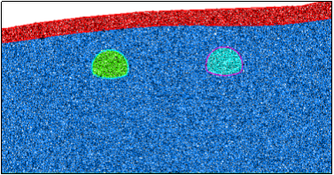
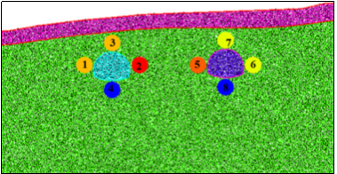
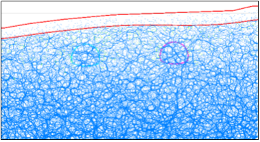
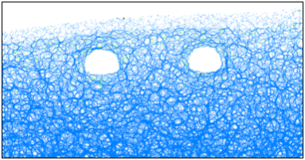
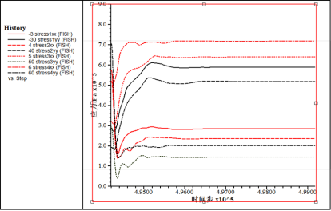
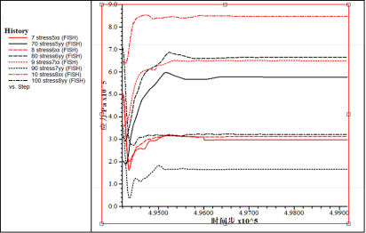
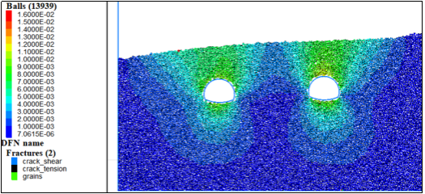

选取截面为隧道入口段，YK8+890横断面，对应地质钻孔SZK1。隧道附近有断层接触。根据SZK1钻孔数据，该入口段主要为粉质黏土和中风化炭质灰岩。
(1)原始模型

图1 先锋顶隧道初始模型

图2 量测点示意图
根据工程地质横断面图在CAD中等比例绘制隧道断面图，根据断面图等比例生成的先锋顶隧道入口段离散元模型如图1所示，蓝色区域主要为炭质灰岩夹页岩，该部分隧道围岩强度较大。图2给出了相关量测点位置信息，由于该隧道围岩条件较好，因此可以作为开挖后保持稳定状态下的一个参照。
(2)力链分布及调整
力链其实就是颗粒模型粘结之间力的传递关系，一般通过初始力链的方向和粗细可以定性感受岩体的自重应力和构造应力，图3是开挖前力链分布，整体较均匀，开挖扰动后力链主要在隧道附近进行调整，主要表现为两帮纵向加载，顶板和底板横向加载调整。

图3 初始力链

图4 开挖后力链
表1 初始地应力
量测点 | 水平应力/MPa | 垂直应力/MPa |
1 | 0.56 | 0.28 |
2 | 0.51 | 0.20 |
3 | 0.29 | 0.29 |
4 | 0.56 | 0.70 |
5 | 0.50 | 0.20 |
6 | 0.50 | 0.30 |
7 | 0.35 | 0.34 |
8 | 0.65 | 0.71 |
表1 为跟据图2测量点检测得到的初始应力情况，主要为水平应力和垂直应力，结合图5和图6，可以详细的知道开挖以后隧道围岩应力调整过程，主要为隧道两帮围岩在水平方向应力卸载，竖直方向应力加载；隧道顶板围岩在水平方向加载，竖直方向卸载；隧道底板围岩在水平方向加载，竖直方向卸载。
图7给出了先锋顶入口段隧道开挖后位移场的分布，从云图坐标中可以看出，位移基本控制在毫米级的范围，基本可以认为该段隧道开挖过程稳定，不会发生大变形。

图5 左侧隧道应力重分布过程

图6 右侧隧道应力重分布过程

图7 位移云图分布